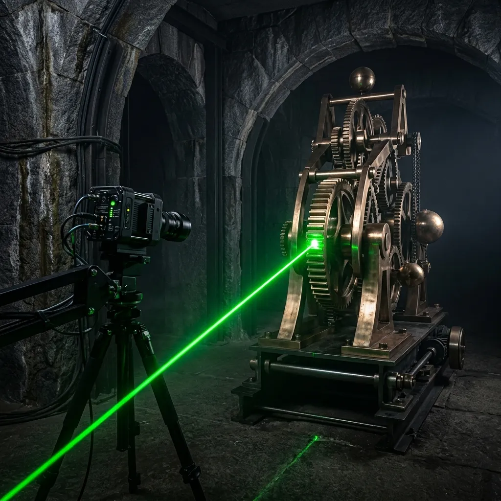
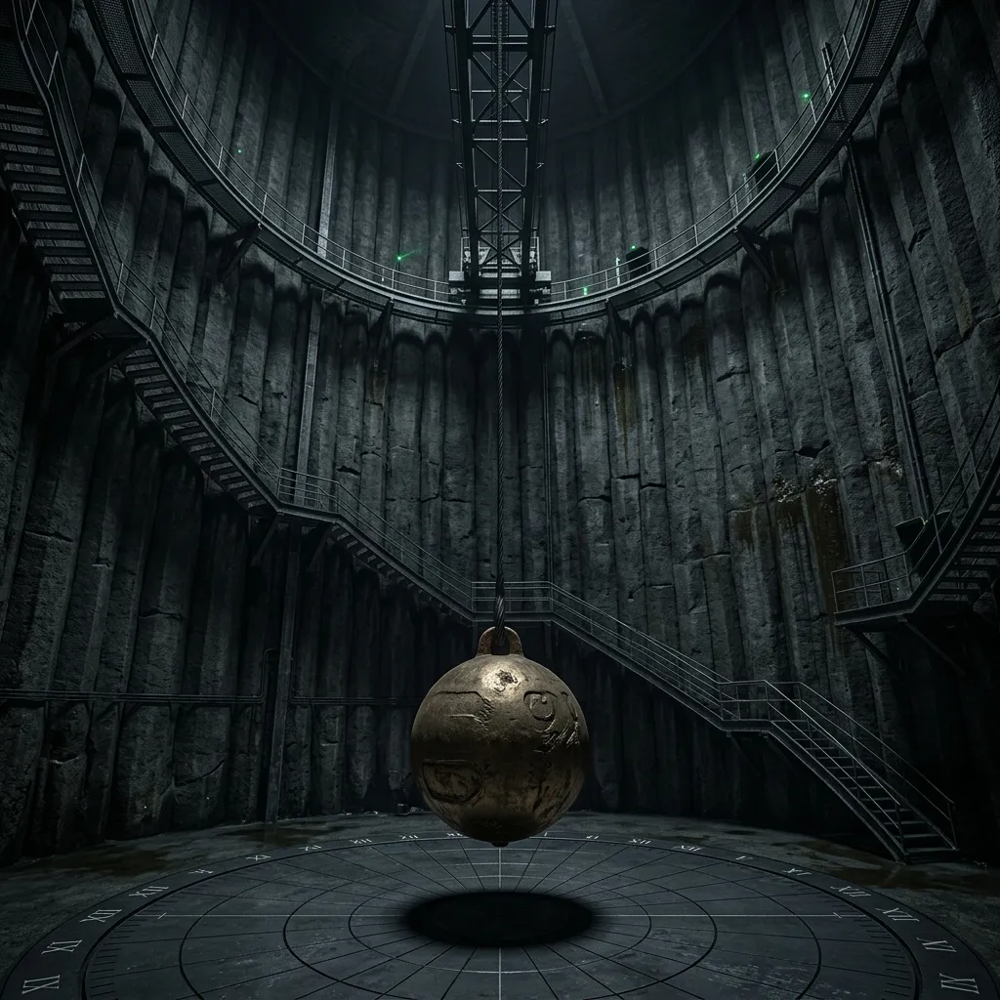
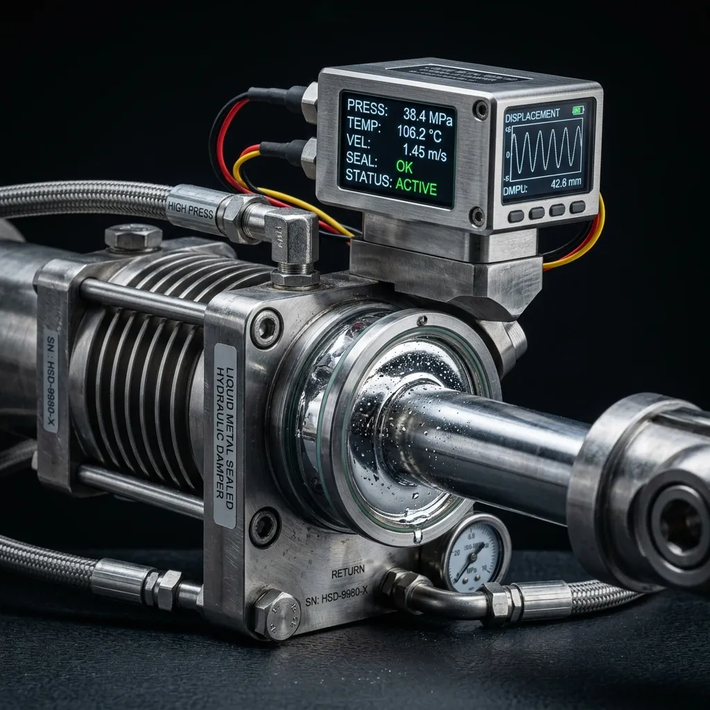

Sub-Micron Kinetic Calibration for Deep-Vault Sculptural Mechanics_
Isolating subterranean kinetic art from ambient tectonic drift and micro-seismic interference.
Suspended kinetic sculptures installed in underground vaults suffer from continuous micro-seismic distortion caused by crustal shifts, ocean tides, and distant transit networks. Without active structural dampening, delicate rotational balance degrades within forty-eight hours of installation. Operating from our subterranean granite testing chamber in Sutherland, we design and calibrate multi-tonne counter-mass systems that maintain sub-micron kinetic alignment under any subterranean condition.
Neutralising the Micro-Seismic Baseline of the Karoo Crust
All planetary crusts vibrate continuously between 0.1 and 15 Hertz—a subtle tectonic hum completely imperceptible to human occupants but catastrophic to balanced kinetic art. When a twenty-tonne bronze pendulum or floating harmonic ring is suspended within an underground chamber, this low-frequency ambient energy couples directly with the mounting structural anchors. Over time, harmonic resonance induces micro-friction in liquid bearings, skewing precision orbital trajectories and degrading the intended aesthetic geometry.
Our calibration methodology treats the surrounding rock strata as an active variable rather than a static foundation. Utilizing three-axis laser interferometry anchored sixty metres into un-weathered granite bedrock, we map the ambient seismic signature of the installation site across forty-eight continuous hours. We then engineer bespoke liquid-mercury counter-dampers and piezoelectric mass-actuators that feed inverted phase cancellation waves into the sculpture’s pivot frame. The result is a total isolation envelope: a subterranean kinetic environment where physical motion is governed exclusively by initial inertia and pure gravitational law, completely detached from the geological noise of the Earth.
Telemetry Readouts & Calibration Tolerances
The 5-Stage Inertial Tuning Sequence
Geological Strata Baseline Survey
Deploying wide-band seismometers across a one-kilometer radius to calculate continuous tectonic interference, subterranean transit vibrations, and micro-seismic frequency spikes prior to the commencement of any anchor drilling. This initial phase requires forty-eight hours of uninterrupted telemetry to establish a reliable crustal baseline and map harmonic anomalies.
Deep Bedrock Anchor Borehole Drilling
Penetrating non-weathered strata up to 60m deep using liquid-cooled tungsten carbide drill heads. This process strictly avoids unstable sedimentary layers and groundwater aquifers, ensuring that the primary structural reference pins are locked directly into solid granite or basalt formations for maximum rigidity and mechanical coupling.
Piezo-Actuator Array Mounting
Interfacing active phase cancellation units directly with the kinetic sculpture's primary load-bearing suspension frame. Each actuator is calibrated to deliver precise counter-force vectors measured in micro-newtons, compensating for thermal expansion in suspension cables and neutralising high-frequency ambient noise before it propagates into the kinetic pivot.
Interferometric Harmonic Phase Matching
Initiating a closed-loop feedback cycle driven by three-axis laser interferometry. The system continuously maps incoming lithic resonance and generates an exact inverted wave pattern. By firing the piezo-actuator array within a sub-millisecond timeframe, the system achieves destructive interference, effectively nullifying the tectonic baseline vibration.
Final Zero-Point Inertial Locking
Engaging passive liquid-mercury counter-dampers to finalise the subterranean isolation envelope. At this stage, the kinetic sculpture is completely decoupled from the geological noise of the surrounding crust. All subsequent physical motion is governed exclusively by initial inertia, intended rotational balance, and pure gravitational mechanics without externally induced micro-friction.
Archive of Subterranean Installations
The Great Karoo Pendulum
14-tonne bronze counter-rotor suspended in a 60m basalt silo. Achieved 0.005Hz structural dampening. The installation demanded ultra-precise lithic anchoring through complex sedimentary layers into the solid Karoo bedrock. The system maintains absolute rotational harmony despite seasonal temperature variations and distant seismic tremors.

Sub-Tectonic Harmonic Ring
Magnetically suspended kinetic ring embedded within a repurposed deep nuclear bunker beneath the city. The primary engineering challenge involved isolating the delicate magnetic bearings from the continuous, high-amplitude vibrations generated by the active municipal tram network overhead. The implemented piezo-actuator arrays successfully neutralised all transit-induced micro-seismic interference.
The 80-Metre Vertical Gyroscope
Massive vertical axis gyroscope installation intersecting multiple active bedrock fault lines in a highly volatile tectonic region. By deploying an advanced configuration of twelve liquid-mercury counter-dampers and deep granite anchor pins, the installation maintained perfect sub-micron rotational stability through three distinct micro-earthquakes during its initial commissioning phase.
Field Instrumentation & Sensor Rigs
Model-88 Piezo-Sensors
- Op Temp: -10°C to +50°C
- Voltage: 24V DC Draw
- Protocol: RS-485 / Modbus
- Function: Micro-radian drift detection
Military-grade seismic detection units housed in anodized steel enclosures. These sensors are specifically calibrated to identify low-frequency crustal hums and micro-radian structural drift. Data is transmitted via shielded RS-485 connections to prevent electromagnetic interference from surrounding municipal power grids.
Sutherland Litho-Anchor Pins
- Material: Tungsten-Carbide
- Depth: 60 metres maximum
- Tolerance: ±0.01mm
- Function: Static reference anchoring
Bespoke heavy-duty anchoring rods forged from solid tungsten-carbide. Driven directly into un-weathered bedrock, these pins serve as the unyielding physical foundation for the interferometric laser rigs. Their exceptional tensile strength prevents microscopic flexing under extreme multi-tonne kinetic loads.

Mercurial Phase-Cancellation Tanks
- Fluid: Liquid-Mercury (13.53 g/cm³)
- Pressure: 120 Bar operational
- Response: <2 milliseconds
- Function: Passive inverted wave dampening
The core of our passive isolation envelope. These hermetically sealed hydraulic tanks utilize the extreme density of liquid mercury to mechanically counteract and absorb severe harmonic resonance. They operate independently of the electrical grid, ensuring uninterrupted dampening during catastrophic power failures.
Command-Line Engineering Diagnostics
> QUERY: What happens during a major seismic event (>4.0 Richter)?> QUERY: How often must mercury dampeners be serviced?> QUERY: Can the system be retrofitted to existing heritage vaults?> QUERY: What is the power requirement for active phase cancellation?> QUERY: How are thermal expansion variations in long cables compensated?